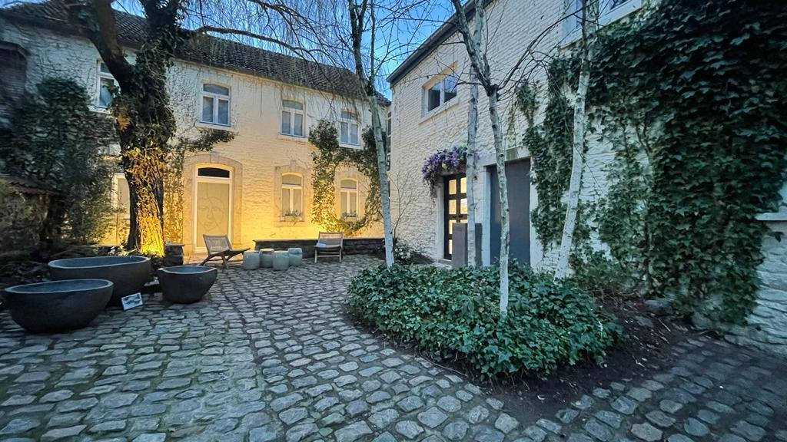
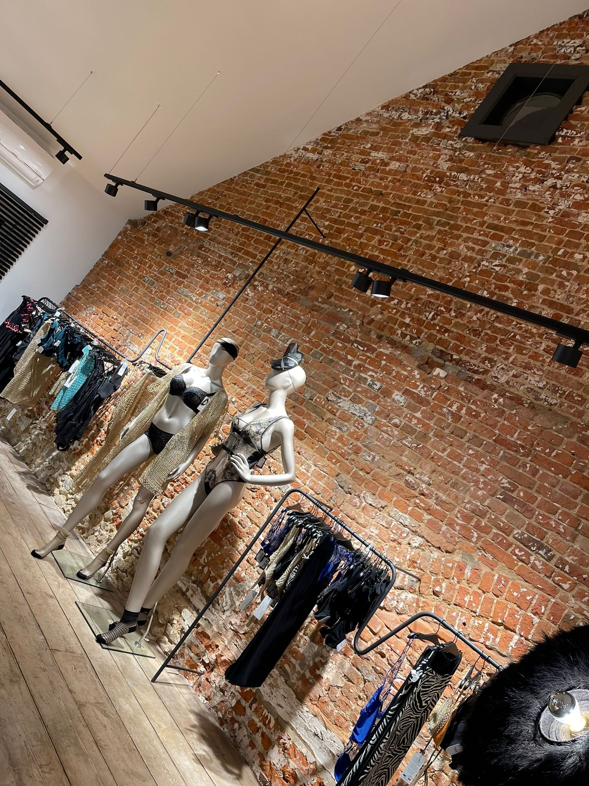
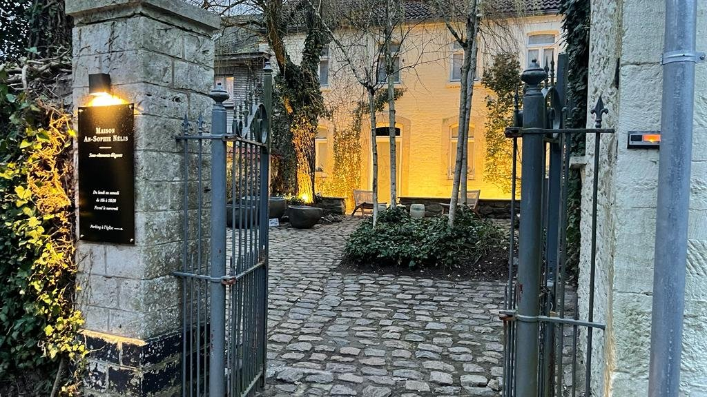
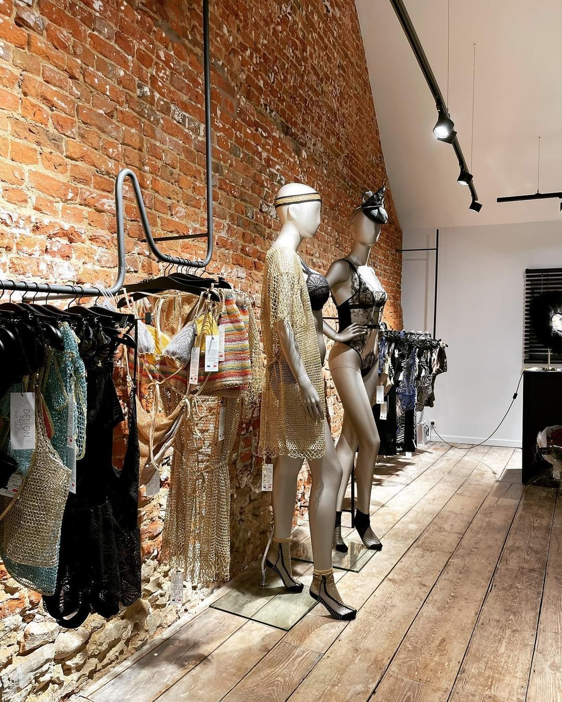
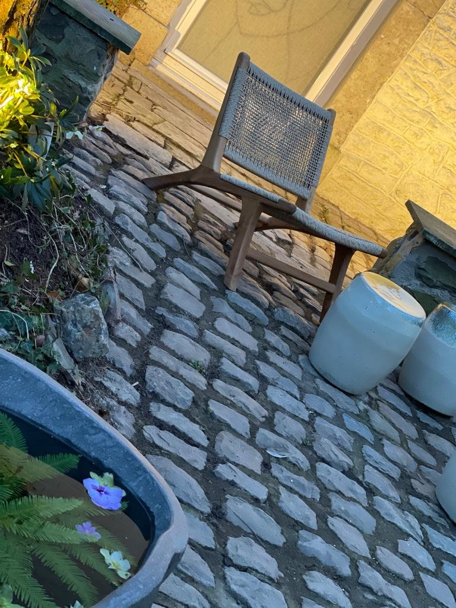
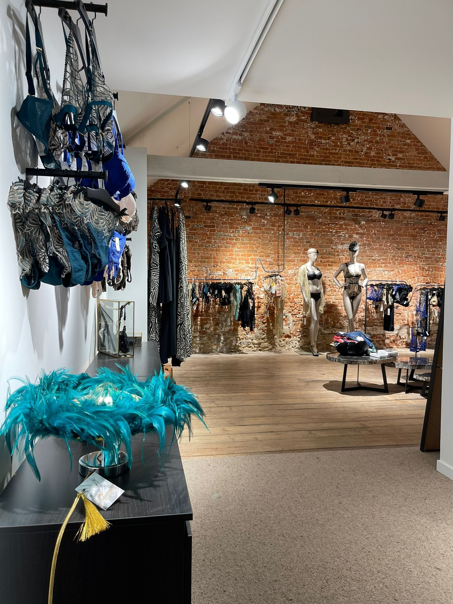
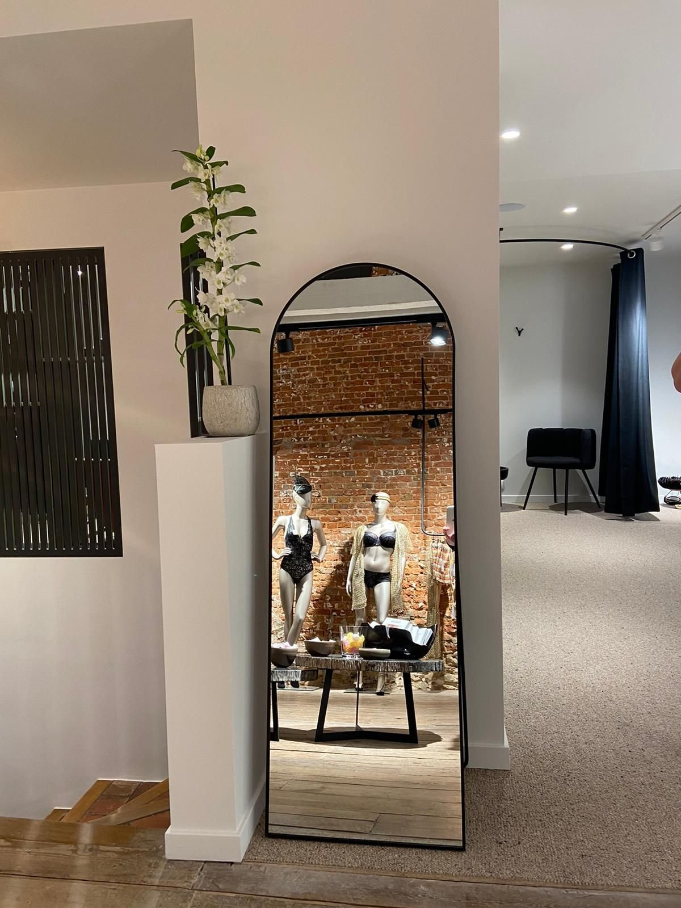
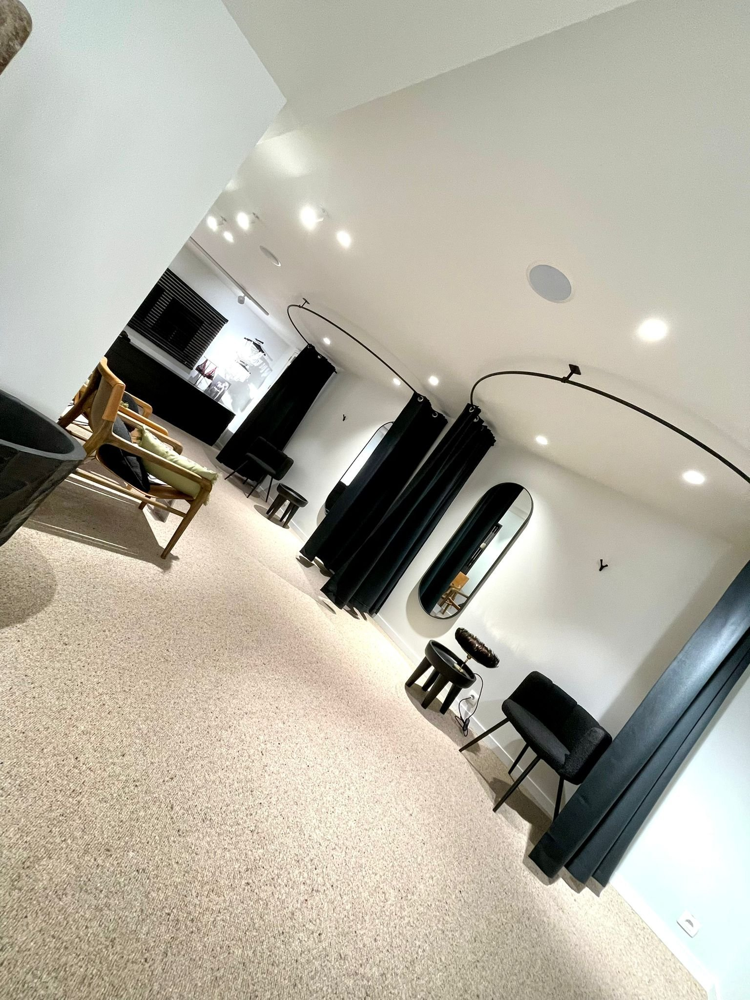
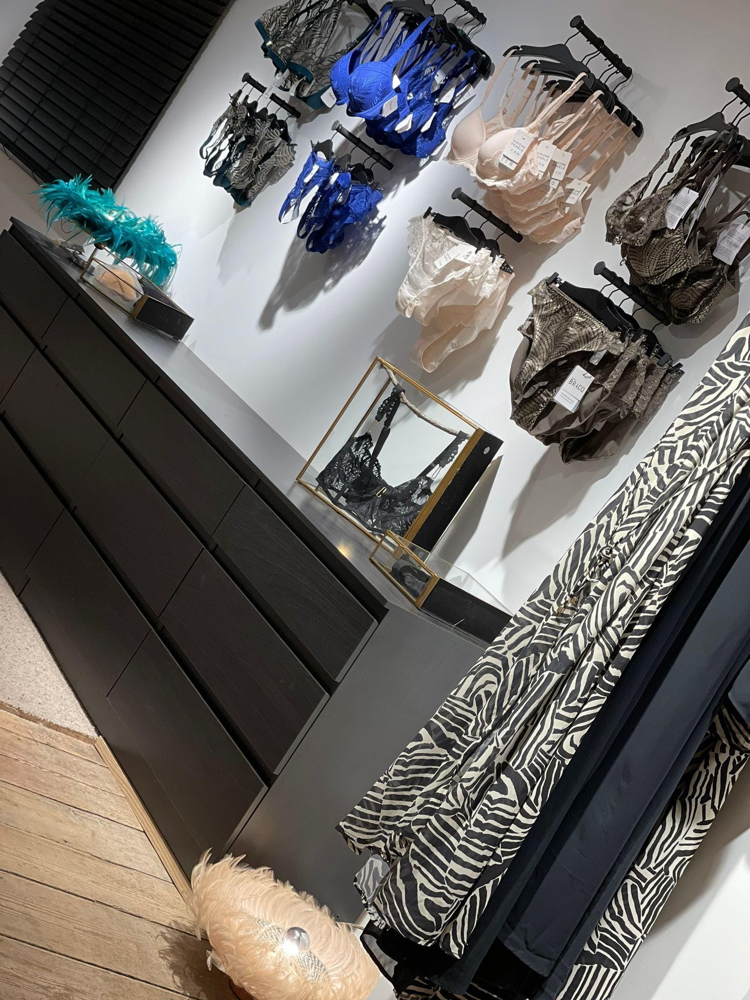
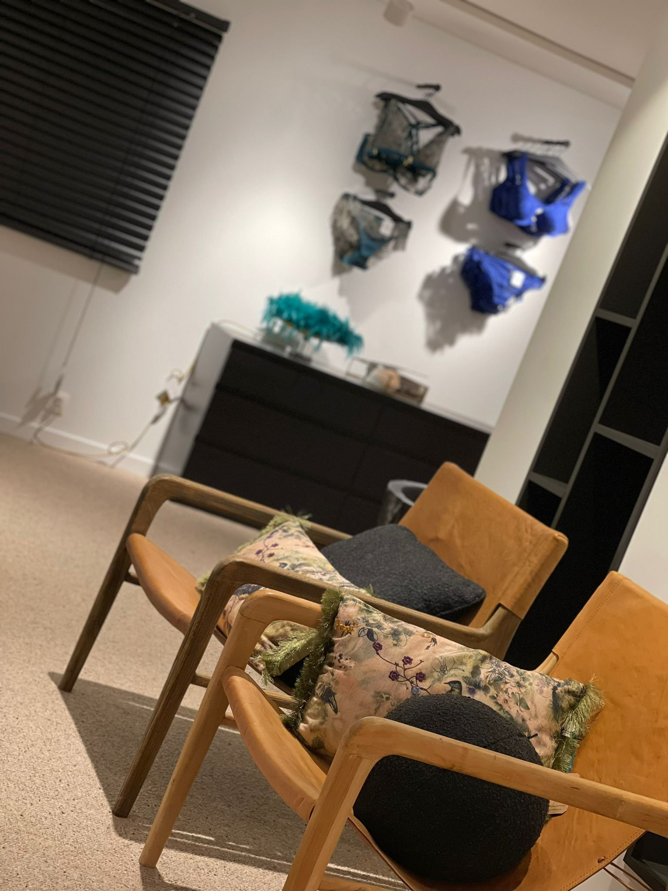

La Maison
MAISON AN-SOPHIE NÉLIS incarne l'essence du luxe et de l'élégance dans le monde de la lingerie en Brabant Wallon.










Ce sanctuaire exclusif est dédié à toutes les femmes actuelles en quête d'articles de qualité supérieure et d'une expérience différente.
MAISON AN-SOPHIE NÉLIS est spécialisée dans les marques de lingeries de renom telles que : Aubade, Simone Pérèle, Wacoal, Louisa Bracq, Anita, Mey, Delion Paris, Loïc Henry, Lise Charmel, Hanro, Le Chat vous accueille dans un univers bienveillant et accueillant.
MAISON AN-SOPHIE NÉLIS offre également une collection de lingerie pour les femmes ayant subi une intervention mammaire. Avec une attention toute particulière pour leur confort et leur bien-être, nous avons sélectionné des pièces conçues spécialement pour un maintien optimal et naturel.
Afin de garantir un service personnalisé de qualité, nous disposons de cabines d'essayage extra larges pour permettre à une prothésiste de prendre les mesures nécessaires une fois par mois, évitant ainsi aux clientes de devoir se déplacer en milieu hospitalier.
L'accent est mis sur le service personnalisé, où le sourire de la propriétaire est une garantie de satisfaction. Les collections sublimes sont proposées en tandem avec des conseils de morphologie exclusifs, afin de garantir un choix optimal pour chaque cliente.
Le magasin est situé Chaussée de Wavre 183c à 1360 Perwez. Veuillez consulter les horaires d'ouverture sur la page contact.
Vous serez accueillis dans un environnement raffiné, avec un parking gratuit à disposition pour votre commodité.